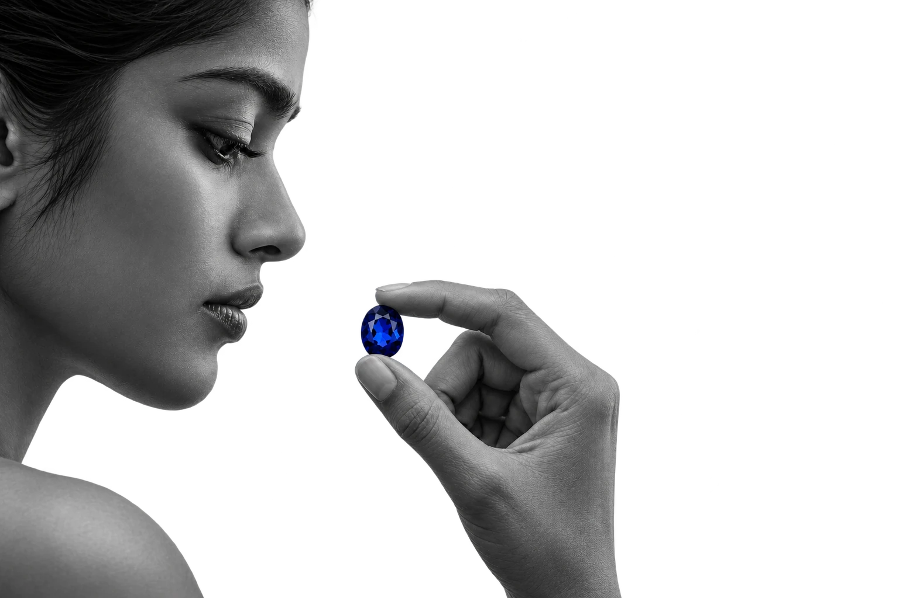

The cutting
Cut by ourown hands.
More than 40 years in the gemstone trade stand behind every cut. Each stone is shaped at our own wheel, one facet at a time, until its colour shows at its best.

Master stonecutters of Ceylon
Coloured gemstones, cut in our own workshop. Choose a loose stone or picture the piece it could become.
The cutting
More than 40 years in the gemstone trade stand behind every cut. Each stone is shaped at our own wheel, one facet at a time, until its colour shows at its best.
From stone to ring
Scroll and the ring turns. The stone changes colour as it goes.
Every part is a choice
You choose the gemstone, the setting and the metal.
Coming together
Stone, setting and band meet as one ring.
A matched pair
A pair of earrings needs two stones that agree in colour, size and cut. They are matched side by side, in the shade you choose.
Find your gemstone
Four choices and you see it take shape. The house reads your request before you arrive, so the right stones are on the table.
Illustrative colour. Actual stones vary.
An illustration of your choice, not a stone in stock.
By private appointment
See the stone before you decide. Message the house on WhatsApp and they reply to agree a time, in person or by video call.
Arrange a private viewingAgainst the skin
On a tray, a gemstone is seen on its own. On you, it meets skin, light and movement. Ask to see it worn.
Start with a gemstone or with a piece you would love to wear. Look through rings, earrings, pendants and cufflinks, then ask the house what is possible.
Ask about this pieceOval blue gemstone, loose
Stone passportSample
Every value on this card is a sample until the house supplies its own. Each piece is a design example, not stock.
Your shortlist
Sample passports. The house confirms every detail before a viewing.
On the hand
A ring is seen from above and always on the move. Put it on, turn your hand and watch how the stone sits.
Under the loupe
A loupe shows what the eye alone misses. At a viewing, look through one and ask anything about the stone in front of you.
The pictures on this page are generated samples, standing in for the house's own photographs.